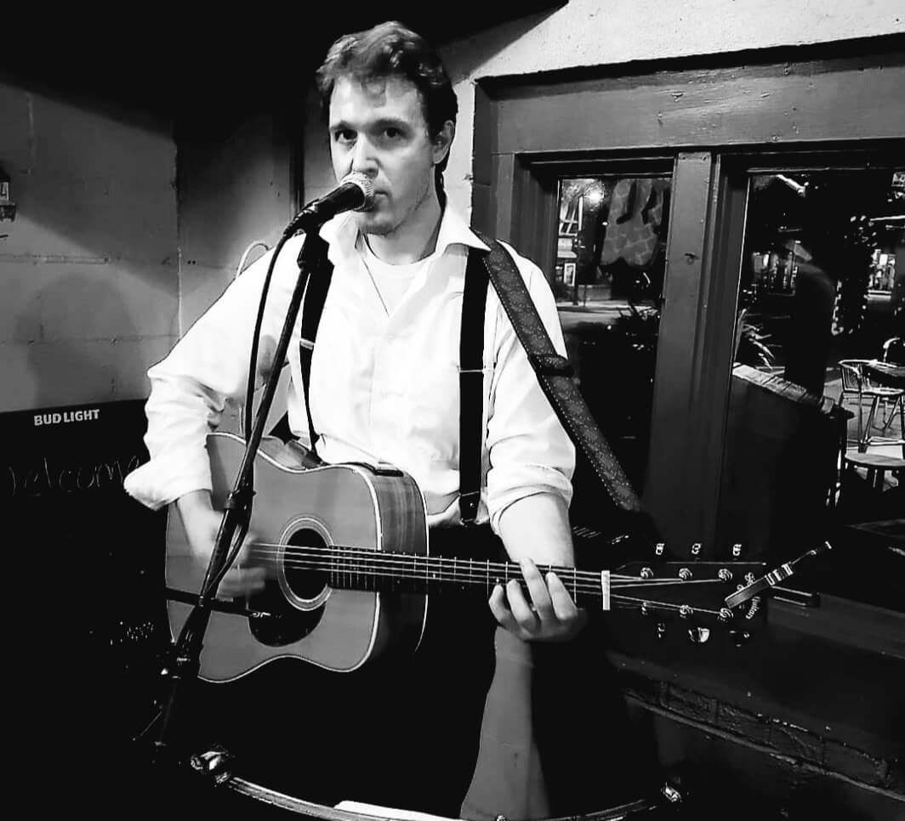

A veteran musician and a man of many talents, Hunter Moss is the Baseborn Troubadour. Known as a skilled guitar player with decades of experience, and singer a prolific singer in bands such as Pluff Mud Queen and Bizness Suit, Moss is finally releasing his debut solo album, “The Baseborn Troubadour”.
“The Baseborn Troubadour” features Moss on multiple instruments playing songs that he has been crafting for years. Unlike his previous projects with crunchy tones and driving guitar licks, the album features more melodic, country influences reminiscent of the golden age of songwriting in the 60s and 70s. Inspired by the greats like Bob Seger, Neil Young, and the Rolling Stones, Moss couples classic rock songs with a modern twist.
With a crooner type singing, Moss lulls you into a sense of nostalgia with each song. Coupled with Moss’ powerful songwriting, Moss takes advantage of this feeling by setting the tone of missing days gone by when life was simpler. From new loves to lost loves to missing the days gone by, the words enchant you into a sense of melancholy dripping in remorse. The feeling haunts you, only for Moss to pull the rug out from under you with funky breakdowns, psychedelic guitar solos and tempo changes that make you shoot upright in your chair.
The blend of familiar influences with a tinge of surprise offers a rewarding listening experience that will leave you feeling bitter-sweet, but satisfied. Scheduled for release in 2021, be on the lookout for “The Baseborn Troubadour”.
Live Music
Hunter Moss’ career has been sculpted by his love for live music. From solo acts, to full band ensembles, Moss promises to enchant you. Enjoy these snippets from the past, and we hope to see you at the show!
Live at Home team BBQ in Charleston, SC, Moss debuts a new single "Hello Miss Lady"
A classic from his Pluff Mud Queen days, another original from Home Team BBQ in Charleston, SC called "Good Enough"
Live from KC Mulligans in North Charleston, SC, Moss debuts "All My Time" with drummer Jeremy Hunton
Again from KC Mulligans in North Charleston, SC, Moss plays an original from his Pluff Mud Queen Days titled "Good Enough" with drummer Jeremy Hunton.